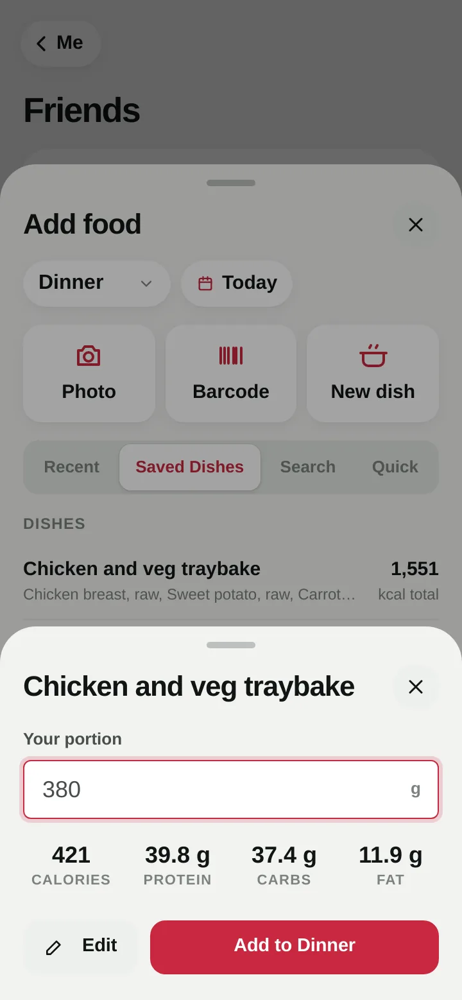
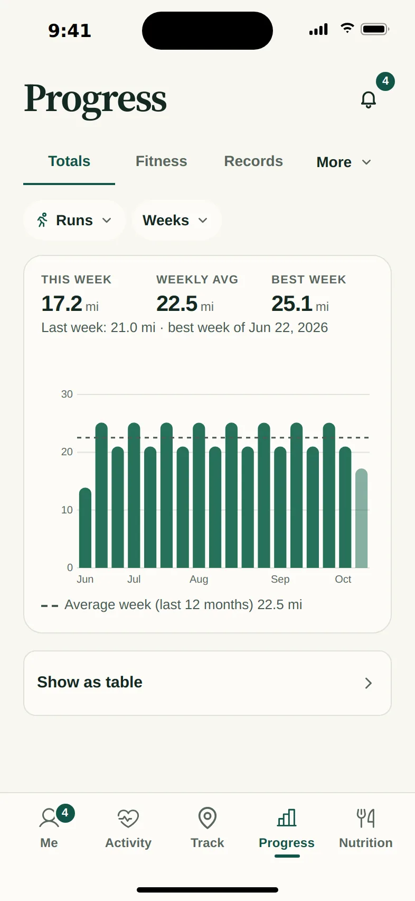
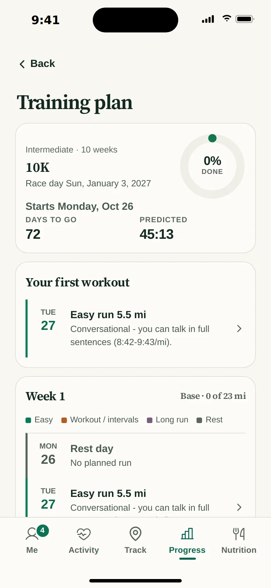
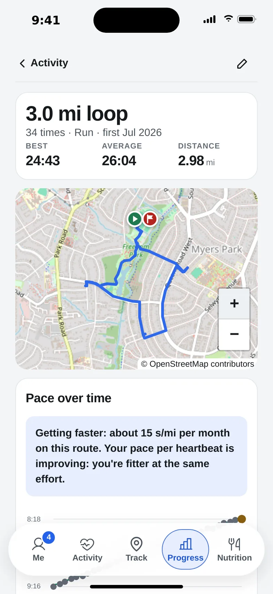
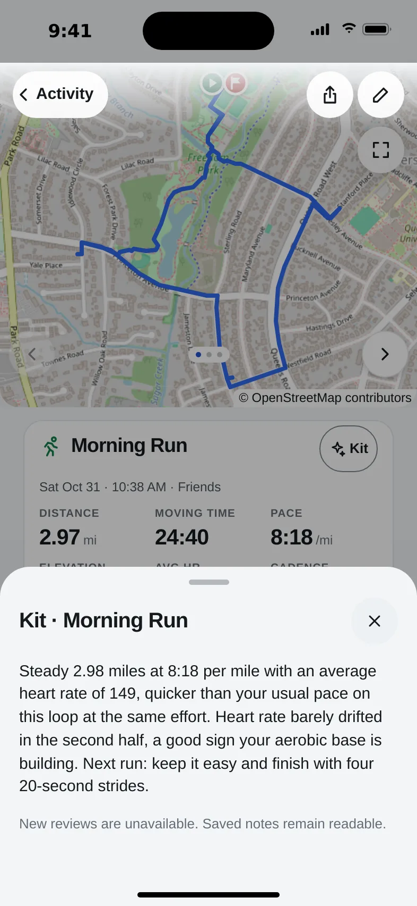
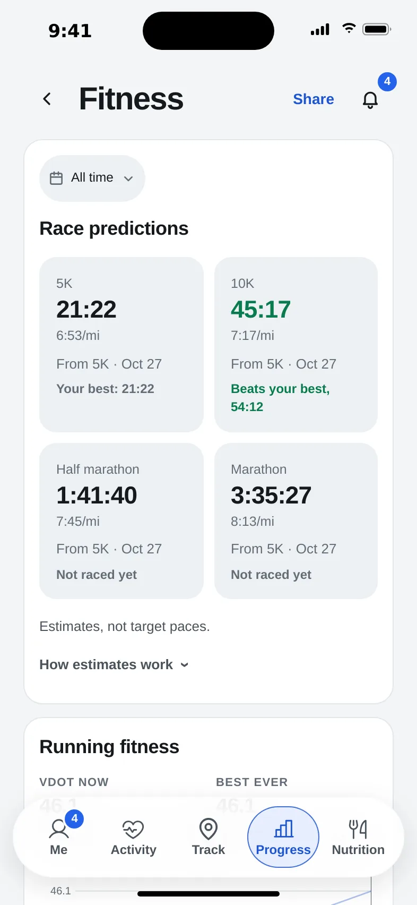
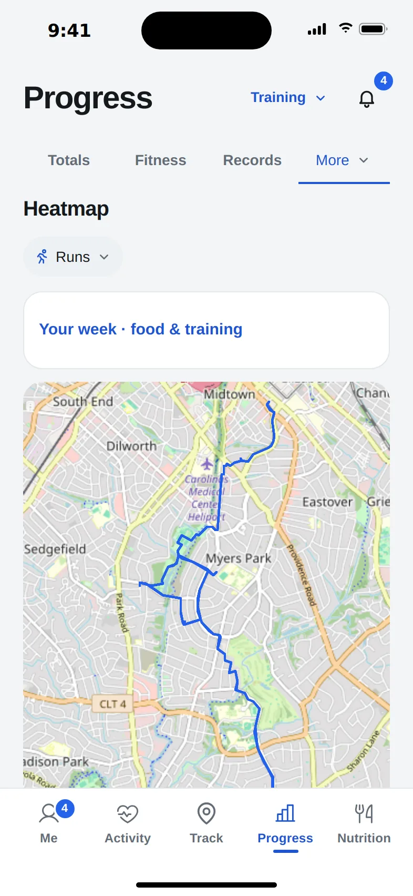

kinetta
/kɪˈnɛtə/ · kih-NET-uh · noun
- from kinetic: energy that comes from moving
- and kin: the people you move with
Kinetta does what a running app and a calorie counter do, together: every run, ride and walk, every meal and macro, and how they work on each other. Free and private.
Free during the beta. Works in any phone's browser today; an iPhone app with Apple Health sync is on the way. No ads, and no one selling your data.

Your runs and your friends' in one feed, with cheers and comments. Your front door stays off the map.
Add ingredients as you cook, weigh the pot, weigh your plate. Your share is logged, and leftovers wait for tomorrow.
Notes on every workout, a weekly review, and honest feedback on your eating and your recipes.
5K to marathon, with paces from how you're running now. Runs tick off workouts on their own.
Snap a meal or scan a packet, and the calories are filled in.
Every workout from your watch counts against what you ate, with no typing.
Most people keep their training in one app and their eating in another, and neither knows about the other. Kinetta keeps both, so each makes the other smarter.
Find friends by name, and the Activity tab becomes a feed of your runs, rides and walks and theirs, newest first. Give a cheer, leave a comment, see who's out there today.


Logging a home-cooked meal shouldn't mean guessing. Add each ingredient as it goes in the pot, weigh the finished dish and your plate, and Kinetta logs exactly your share.


Maps, splits, pace, heart rate and effort. From Garmin, Apple Watch, files or your whole Strava history.

Weekly totals, records, race predictions, fitness and fatigue, and your favorite loops tracked automatically.

5K to marathon, first-timer to advanced. Paces from your current shape; runs tick off workouts on their own.

Search, barcode, your usual meals, or a photo. Calories and macros against your targets, plus your weight trend.
What other apps keep behind a subscription comes standard in Kinetta. Strava charges $79.99 a year for most of the training features below, and MyFitnessPal Premium another $79.99 for the food ones.
Kinetta notices when you run the same route again, lines every effort up on one chart and tells you, in plain words, whether you're getting faster.



A short note on each new workout and a review every Sunday, written from your own numbers. Uses your own Gemini or Claude key (about a cent a note) and stays off until you add one.

Two weeks of your food log read by the AI coach: what's going well, and two or three specific changes to try, using the foods you actually eat.

Ask the coach about any dish you cook: calories and protein per portion, and tweaks like less oil or more protein, with what each one changes.
First-timer run/walk to advanced, 6 to 20 weeks. Paces come from your current fitness, and your runs tick off workouts on their own.

Predicted 5K to marathon times from how you're running now, a VO2max estimate, and fitness, fatigue and form over time.

Every street you've covered, by sport. Runs, rides, walks, hikes, swims, rows, skis and gym workouts all live in one place.
| Feature | Kinetta | Elsewhere |
|---|---|---|
| Progress on routes you repeatStrava: Matched Activities | Included | Strava subscription |
| AI insights on your workoutsKinetta: your own AI key · Strava: Athlete Intelligence | Included | Strava subscription |
| Running training plans | Included | Strava subscription |
| Personal heatmap | Included | Strava subscription |
| Fitness, fatigue and formStrava: Fitness & Freshness | Included | Strava subscription |
| Effort score for every workoutStrava: Relative Effort | Included | Strava subscription |
| Grade-adjusted pace | Included | Strava subscription |
| Heart-rate zones from your own max and resting heart rate | Included | Strava subscription |
| Best efforts and personal-record history | Included | Strava subscription |
| Training log and monthly totals | Included | Strava subscription |
| Weekly and yearly goals | Included | Strava subscription |
| Barcode scanning | Included | MyFitnessPal Premium |
| Logging a meal from a photoMyFitnessPal: Meal Scan | Included | MyFitnessPal Premium |
| Custom calorie and macro goals | Included | MyFitnessPal Premium |
| Food insights | Included | MyFitnessPal Premium |
| No ads while logging | Included | MyFitnessPal Premium |
| Price per personStrava $79.99 + MyFitnessPal Premium $79.99 | Free during the beta | $159.98 / year |
Strava features and prices from Strava's Subscription Features help article and strava.com/subscribe; MyFitnessPal's from myfitnesspal.com/premium. US prices, checked October 11, 2026; they may change. Strava is a trademark of Strava, Inc. and MyFitnessPal a trademark of MyFitnessPal, Inc. Kinetta is an independent project and isn't affiliated with either.
No ads, no tracking, and your data is never sold or shared. Kinetta will never make money from ads or from your data.
Everyone has their own account. The app and the database both make sure each person sees only their own activities, food and weight.
Food search sends only the words you search. AI coach notes are optional and off until you turn them on.
An honest note: during the beta, your data is kept on the Kinetta beta server, run by Ben Banks, who can technically read its database. If you'd rather nobody else could, run Kinetta on your own computer instead.
Kinetta is free to run on your own home server for you and your family (personal, noncommercial use). All it needs is a computer that stays on, with Docker installed.
Kinetta makes up its own passwords on the first start, so there's nothing to fill in.
git clone https://github.com/BenCBanks/kinetta.git cd kinetta docker compose up -d
Open http://your-computer:8790. The first account becomes the admin.
# later, to update:
git pull
docker compose up -d --buildPhones need a secure address for the camera and the home screen. The connection guide covers Tailscale, a free Cloudflare Tunnel or your own domain.
Then find each other under Friends, and every run shows up in your feeds.
Kinetta is a made-up word with two halves: kinetic, for the energy of moving every day, and kin, for the family and friends who keep you going.
It started as one family's replacement for a running app and a food tracker: everything those did in one place, with each person's numbers private to them.
We're inviting a small group of testers. Tell us about your training and we'll send you an invite.